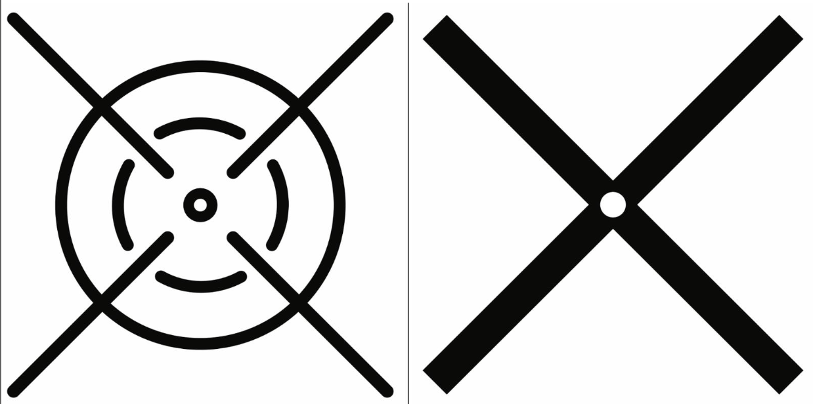
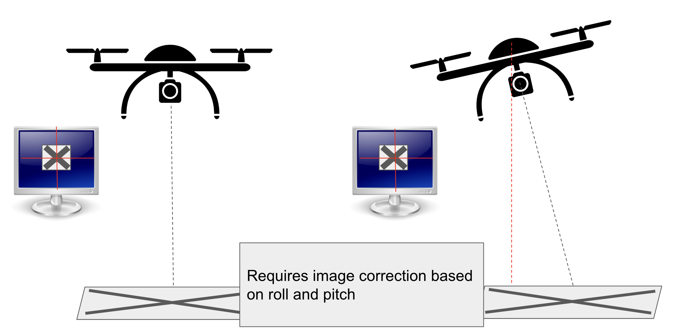

Three key pieces of automation helped secure the 2021 National UAS4STEM competition win - and $2500
The UAS4STEM competition involves a team (usually around 7-8 members) competing to complete a set of tasks within a strict time limit. The most important task to optimize (for my team) was one where we had to, in a crowded, object-filled junkyard, pickup payloads from targets scattered around the area and drop them off at different targets.
Problem #1: Landing accurately

Each of these targets was a square meter, placed randomly throughout an environment. The first is a pickup target and the second is a dropoff target.
The team earned more points the closer to a target they landed and this was a much greater challenge than one would initially think. Winds at Oshkosh were consistently 10 mph around the time of the competition, which not only forced our pilot to compensate for movement but also threw off his aim on the target. Our drone would have to tilt to not move against the wind, and the angle would make it look like we were above our target even when we weren't. The diagram below shows our solution to the problem.

This solution would require us to pull pitch and roll data from the drone to correct the image accordingly. Not only did this help against the wind but it also kept aim accurate when making corrective movement - the tilt in the drone would normally make it hard to know if you've moved far enough.
Design Elements
This solution required some hardwear changes. Our previous camera output the video directly to an analog transmitter to be seen back on the ground. That would not do for this project, so it needed to be replaced with a raspberry pi and digital camera, ontop of which we made our new OSD and vision system software. My plan for the landing system required 2 parts:
- A connection from the drone control system (MAVLink) which can provide pitch, roll, and altitude data to the Raspberry Pi which it will require to understand where it is
- A Raspberry Pi script which takes the place of a tradition on-screen display, creating a HUD ontop of live video, shifting the image so the center always points down, and feeding it to a video transmitter
End Solution

Problem #2: Autonomous points
Autonomous was in the name of the competition, and the organizers needed a way to incentivise teams to complete this task with as little human input as possible. Specifically, we could get half again the max amount of points in the whole competition if we got these autonomous points. GPS, however, was not precise enough for the landing, being accurate only to about 3 meters. So, we needed a way to land that relies on other measurements. I chose to make a camera setup that could see the targets and direct the drone accordingly.

Design Elements
My plan for the landing system required 4 parts:
- A connection from the drone control system (MAVLink) which can provide pitch, roll, and altitude data to the Raspberry Pi which it will require to understand where it is
- A Raspberry Pi script which takes the place of a tradition on-screen display, creating a HUD ontop of live video and feeding it to a video transmitter
- Another Raspberry Pi script which analyzes the data, searching for the target pattern. Combined with the altitude, roll, and pitch, this script needs to return some value that determines the direction and magnitude of the drone movement
- A connection from the Raspberry Pi to the MAVLink system to send mevement instructions - how fast to land, which direction to move, etc.
Prototype

Serious prototype #1
This prototype was built with a raspberry pi and a small screen in a simple and blocky enclosure made with CAD and printed with my personal 3D printer. It's interface was made purely in Python, with a weather app on the front (to insert itself into the daily lives of the users) and a single threaded, flask backend that could only connect to one device at a time
The problems:
The physical design was ugly - few people would want it on their kitchen counter or other very visible location, which would impede the habit-forming required. Finally, using only one device at a time prolonged the measurements significantly, and I needed to change that restriction.
The final product

Improvements:
With the feedback from a survey of 70 seniors, and a chat with an epidemiologist and chronic disease specialist, I refined the physical design to be approachable and displayable. The new system runs on a JavaScript frontend, which allows flexibility in choosing the main screen to best catch the attention of the user. Now, I can put any website as the main screen - news, sports, etc. I also improved my homemade weather app:

I also used asyncio, an asyncronous Python library, to allow the connection of multiple devices at once

Learnings
- How to create a frontend with HTML and CSS and with Python
- Core design of asyncronous coding
- Research competitors in a market
- Interact with Google Cloud
- Create sleek physical designs